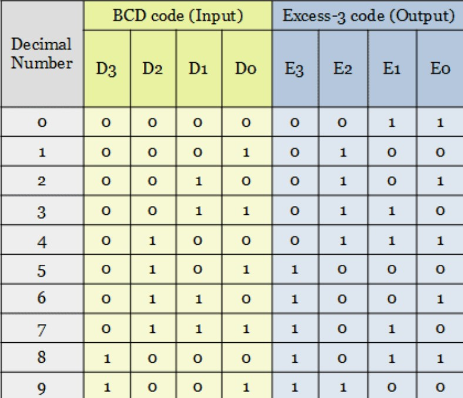
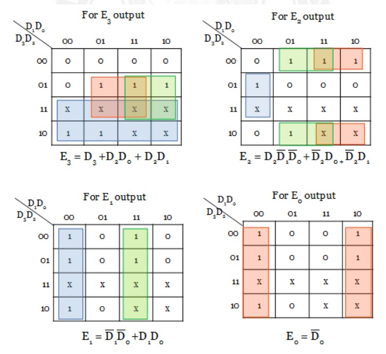
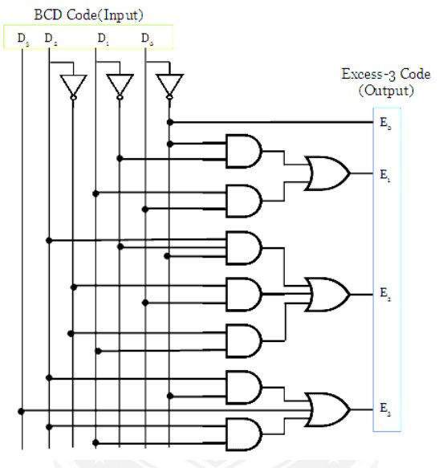

BCD To Excess 3 Code Convertor
For this conversion process, 4-bit BCD code is considered as input, which is converted into 4-bit Excess-3 code. Since 4-bit is considered for BCD code, the output is produced only for the inputs from 0 to 9. The truth table shown below has only the valid 4-bit BCD codes. For the remaining input combinations, the output cannot be predicted. So they are don’t care outputs.
The converter has 4 outputs E0, E1, E2, E3. From the truth table, the minterms can be obtained for each output.
Minterms:
E0 = ∑m(0, 2, 4, 6, 8)
E1 = ∑m(0, 3, 4, 7, 8)
E2 = ∑m(1, 2, 3, 4, 9)
E3 = ∑m(5, 6, 7, 8, 9)
Truth Table:
K-Map:
Logic Diagram:
